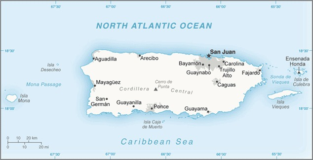

Puerto Rico Flag (Source: CIA World Factbook)
Introduction
Populated for centuries by aboriginal peoples, the island was claimed by the Spanish Crown in 1493 following Christopher COLUMBUS' second voyage to the Americas. In 1898, after 400 years of colonial rule that saw the indigenous population nearly exterminated and African slave labor introduced, Puerto Rico was ceded to the US as a result of the Spanish-American War. Puerto Ricans were granted US citizenship in 1917.
Popularly elected governors have served since 1948. In 1952, a constitution was enacted providing for internal self-government. In plebiscites held in 1967, 1993, and 1998, voters chose not to alter the existing political status with the US, but the results of a 2012 vote left open the possibility of American statehood. Economic recession on the island has led to a net population loss since about 2005, as large numbers of residents moved to the US mainland. The trend has accelerated since 2010; in 2014, Puerto Rico experienced a net population loss to the mainland of 64,000, more than double the net loss of 26,000 in 2010.
Hurricane Maria struck the island on 20 September 2017 causing catastrophic damage, including destruction of the electrical grid that had been cripled by Hurricane Irma just two weeks before. It was the worst storm to hit the island in eight decades, and damage is estimated in the tens of billions of dollars.
Geography
Location
Caribbean, island between the Caribbean Sea and the North Atlantic Ocean, east of the Dominican Republic. 
Puerto Rico Map (Source: CIA World Factbook)
Population Distribution
Population clusters tend to be found along the coast, the largest of these is found in and around San Juan; an exception to this is a sizeable population located in the interior of the island immediately south of the capital around Caguas; most of the interior, particularly in the western half of the island, is dominated by the Cordillera Central mountains, where population density is low.
Elevation
- Mean elevation: 261 m
- Lowest point: Caribbean Sea 0 m
- Highest point: Cerro de punta 1,338 m
Government
Capital
- Name: San Juan
- Geographical Coordinates: 18 28 N, 66 07 W
- Time Difference: UTC-4 (1 hour ahead of Washingto, DC, during Standard Time)
- Etymology: the name dates to 1521 and the founding of the city under the name "Ciudad de San Juan Bautista de Puerto Rico" (City of Saint John the Baptist of Puerto Rico).
Legal System
Civil law system based on the Spanish civil code and within the framework of the US federal system.
Political Parties and Leaders
- National Democratic Party [Charlie RODRÍGUEZ]
- National Republican Party of Puerto Rico [Jenniffer GONZÁLEZ]
- New Progressive Party or PNP [Ricardo ROSSELLÓ] (pro-US statehood)
- Popular Democratic Party or PPD [Alejandro GARCÍA Padillo] (pro-commonwealth)
- Puerto Rican Independence Party or PIP [Rubén BERRÍOS Martínez] (pro-independence)
Communications
Broadcat media
More than 30 TV stations operating; cable TV subscription services are available; roughly 125 radio stations.
Internet country code
Puerto Rico's internet country code is: .pr
Internet Users
- Total: 2,326,006
- Percent of population: 70.6% (July 2018 est.) of the population of Puerto Rico has access to the internet.
- Country comparison to the world: 114